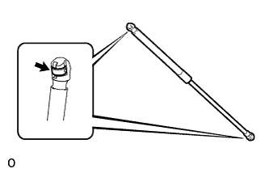
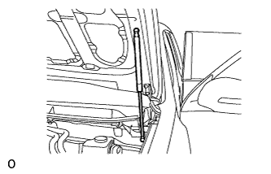

HOOD > REASSEMBLY |
| 1. INSTALL HOOD SUPPORT ASSEMBLY LH |
When reusing the hood support assembly:
|  |
Install the 2 stop rings to the hood support assembly.
|  |
Install the hood support assembly.
Check that the hood support assembly is connected to the ball joint and cannot be pulled off.
| 2. INSTALL HOOD SUPPORT ASSEMBLY RH |
| 3. CONNECT WASHER HOSE ASSEMBLY |
 |
Attach the 4 clips and connect the washer hose assembly.
| 4. INSTALL WASHER NOZZLE SUB-ASSEMBLY |
Connect a new washer nozzle sub-assembly to the washer hose.
Attach the 2 claws to install the washer nozzle sub-assembly.
| 5. INSPECT WASHER NOZZLE SUB-ASSEMBLY |
With the engine running, check the position that the washer fluid hits the windshield.

| *1 | Ceramic Line | - | - |
| *a | Upper Limit | *b | Standard |
| *c | Lower Limit | - | - |
 | Washer Fluid Spray Area | - | - |
| Area | Specified Condition | Area | Specified Condition |
| A | 78 mm (3.07 in.) | B | 213 mm (8.39 in.) |
| C | 158 mm (6.22 in.) | D | 124 mm (4.88 in.) |
| 6. INSTALL HOOD INSULATOR |
 |
Attach the 2 claws.
Install the hood insulator with the 11 clips.
| 7. INSTALL HOOD TO RADIATOR SUPPORT SEAL |
Attach the 7 clips to install the hood to radiator support seal.